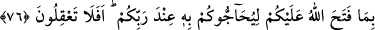

İNANACAKLARINI MI
UMUYORSUNUZ?
75. Şimdi (ey mü’minler!) onların size inanacaklarını mı umuyorsunuz. Oysa ki,
onlardan bir zümre, Allah’ın kelâmını işitirler de iyice anladıktan sonra, bile bile
onu tahrif ederlerdi.
76. (Münâfıklar) inananlarla karşılaştıklarında “İman ettik” derler. Birbirleriyle
başbaşa kaldıkları vakit ise: Allah’ın size açtıklarını (Tevrât’taki bilgileri),
Rabbiniz katında sizin aleyhinize hüccet getirmeleri için mi onlara anlatıyorsunuz;
bunları düşünemiyor musunuz? derler.
77. Onlar bilmezler mi ki, gizlediklerini de açıkça yaptıklarını da Allah
bilmektedir.
78. İçlerinde birtakım ümmîler vardır ki, Kitab’ı (Tevrât’ı) bilmezler. Bütün
bildikleri kulaktan dolma şeylerdir. Onlar sadece zan ve tahminde bulunuyorlar.
79. Elleriyle (bir) Kitap yazıp sonra onu az bir bedel karşılığında satmak için “Bu
Allah katındandır” diyenlere yazıklar olsun! Elleriyle yazdıklarından ötürü vay
hâline onların! Ve kazandıklarından ötürü vay hâline onların!
80. İsrâîloğulları: Sayılı birkaç gün müstesnâ, bize ateş dokunmayacaktır, dediler.